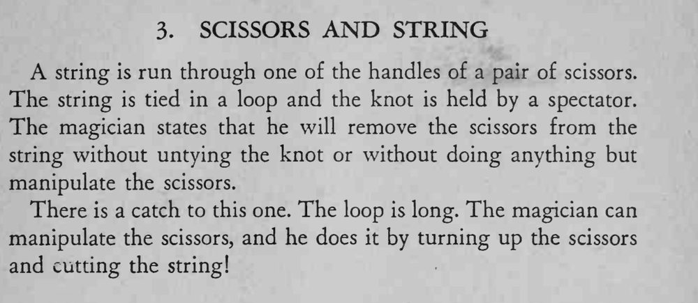

绳子穿过剪刀手柄系成长环，观众捏住绳结。魔术师声称不动绳结也能把剪刀取下，结果他翻起剪刀把绳子剪断了。
这是靠揭底出笑果的小戏法，动手前要说得一本正经，剪断后才显出幽默。

A string is run through one of the handles of a pair of scissors. The string is tied in a loop and the knot is held by a spectator. The magician states that he will remove the scissors from the string without untying the knot or without doing anything but manipulate the scissors. There is a catch to this one. The loop is long. The magician can manipulate the scissors, and he does it by turning up the scissors and cutting the string!